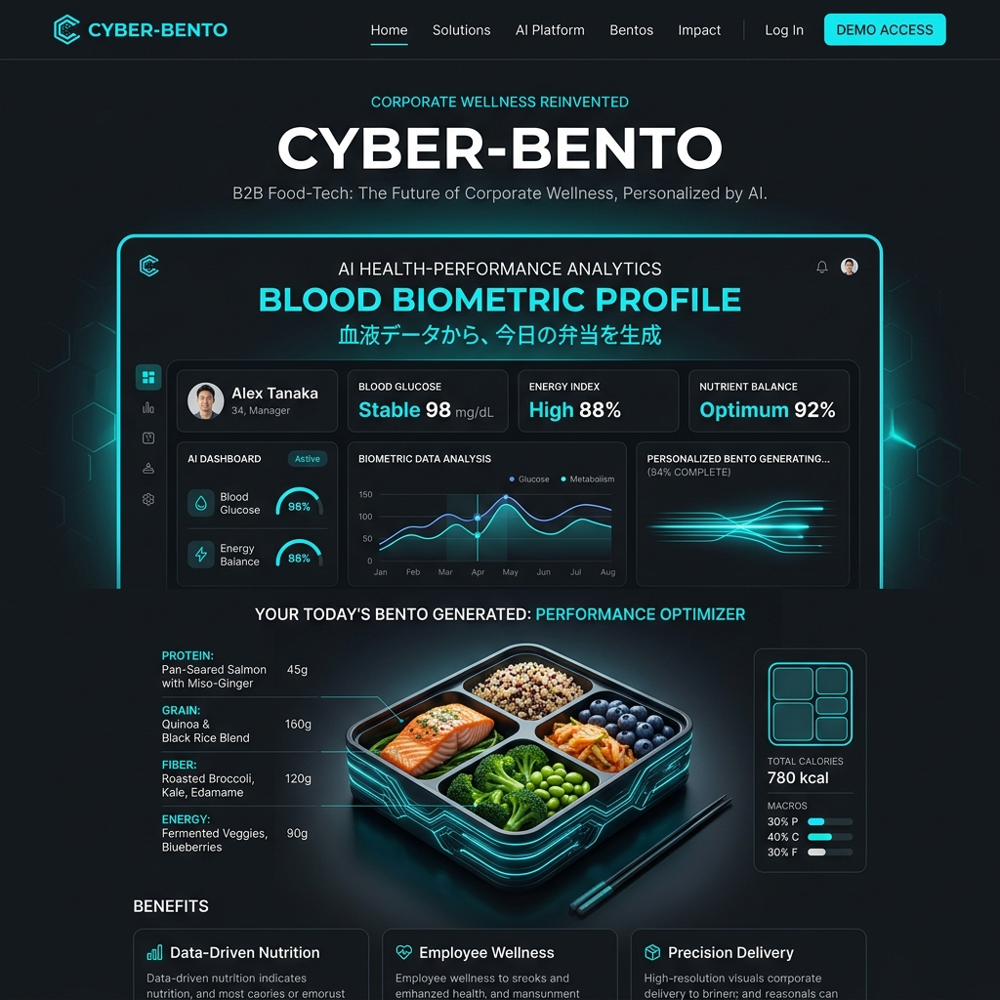

血液データから、
今日の弁当を生成する。
社員の健康診断データ、スマートウォッチの活動量、そして朝のストレススコアをAIが統合分析。その日のその人に「1グラム単位」で最適化されたマクロ栄養素のお弁当をオフィスに届ける「CYBER-BENTO」。

「全員同じランチ」の非効率性
昨日徹夜したエンジニアと、今日マラソン大会を控えるセールス担当。必要な栄養素が全く違うにも関わらず、同じ唐揚げ弁当を食べて午後を眠気と戦いながら過ごす。この栄養のミスマッチが、企業の生産性を著しく低下させています。
超解像度パーソナライゼーションの裏側
バイオメトリクス連携
年1回の健康診断データ（血糖値、コレステロール等）と、ウェアラブル端末の睡眠・心拍データをセキュアに同期し、不足栄養素を特定。
AIロボティック・キッチンテック
工場ではAIの指示に基づき、ロボットアームが「タンパク質32g」「炭水化物45g」など、個人ごとの指示通りにミリグラム単位で食材を自動計量・配膳。
ダイナミック・メニュー生成
同じ栄養素でも「昨日は魚だったから今日は鶏肉」など、味の飽きがこないよう数百万通りの組み合わせからレシピを自動生成。
午後の眠気を完全にコントロールする
食後の強烈な眠気は、血糖値の急激な乱高下（グルコーススパイク）が原因です。CYBER-BENTOは、その人の代謝能力に合わせて低GI食品を最適にブレンド。血糖値を緩やかに保ち、午後イチの重要な会議から夕方まで、クリエイティビティと集中力を最大化させます。
企業価値を高める「攻めの健康経営」
社員食堂を持つ余裕のないスタートアップでも、世界最高水準のパーソナライズ栄養管理を福利厚生として提供可能。採用時の強力なアピールポイントになるだけでなく、病欠率の低下による明確なROI（投資対効果）をダッシュボードで確認できます。
Case Study | シリコンバレー系IT企業
全社員200名にCYBER-BENTOを導入。導入後3ヶ月で、ウェアラブル端末のデータから「深い睡眠」の割合が平均22%向上。午後のカフェイン消費量が半減し、社内アンケートでは「午後3時の倦怠感が完全に消えた」との声が殺到しました。
食事を「アルゴリズム」へと昇華する
私たちはフードデリバリー会社ではありません。人間の身体という最も複雑なハードウェアに対し、最適な燃料（栄養）というソフトウェアをインストールする、究極のヒューマン・パフォーマンス・カンパニーです。